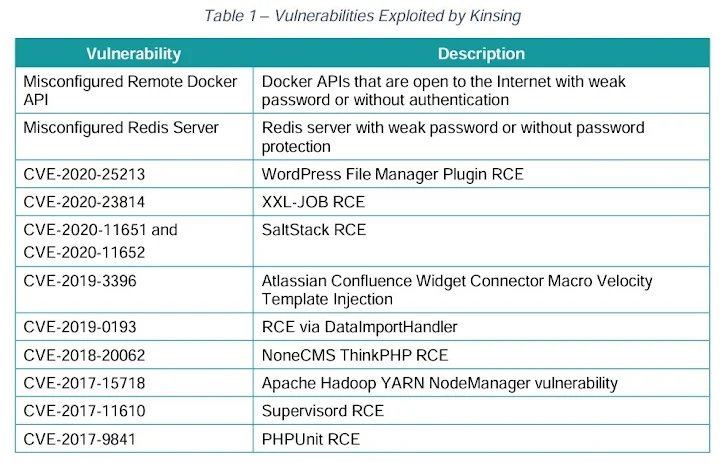

Kinsing khai thác nhiều lỗ hổng hơn để mở rộng botnet cho cryptojacking

Nhóm cryptojacking được gọi là Kinsing đã chứng minh khả năng liên tục phát triển và thích nghi, cho thấy mình là một mối đe dọa dai dẳng bằng cách nhanh chóng tích hợp các lỗ hổng mới được tiết lộ vào kho vũ khí khai thác và mở rộng mạng botnet của họ.
Những phát hiện đến từ công ty bảo mật đám mây Aqua, mô tả tác nhân đe dọa đang xây dựng các chiến dịch khai thác tiền điện tử bất hợp pháp kể từ năm 2019.
Kinsing (hay còn gọi là H2Miner), một cái tên được đặt cho cả phần mềm độc hại và kẻ thù đằng sau nó, đã liên tục mở rộng bộ công cụ của mình với các khai thác mới để đăng ký các hệ thống bị nhiễm vào mạng botnet khai thác tiền điện tử. Nó được ghi nhận lần đầu tiên bởi TrustedSec vào tháng 1 năm 2020.
Trong những năm gần đây, các chiến dịch liên quan đến phần mềm độc hại dựa trên Golang đã vũ khí hóa các lỗ hổng khác nhau trong Apache ActiveMQ, Apache Log4j, Apache NiFi, Apache Tomcat, Atlassian Confluence, Citrix, Liferay Portal, Linux, Openfire, Oracle WebLogic Server và SaltStack để vi phạm các hệ thống dễ bị tổn thương.
Các phương pháp khác cũng liên quan đến việc khai thác các phiên bản Docker, PostgreSQL và Redis được định cấu hình sai để có được quyền truy cập ban đầu, sau đó các điểm cuối được sắp xếp thành một mạng botnet để khai thác tiền điện tử, nhưng không phải trước khi vô hiệu hóa các dịch vụ bảo mật và loại bỏ các thợ đào đối thủ đã được cài đặt trên máy chủ.
Phân tích tiếp theo của CyberArk vào năm 2021 đã phát hiện ra những điểm tương đồng giữa Kinsing và một phần mềm độc hại khác có tên NSPPS, kết luận rằng cả hai chủng "đại diện cho cùng một gia đình".
Cơ sở hạ tầng tấn công của Kinsing rơi vào ba loại chính: Máy chủ ban đầu được sử dụng để quét và khai thác lỗ hổng, máy chủ tải xuống chịu trách nhiệm dàn dựng tải trọng và tập lệnh và máy chủ chỉ huy và kiểm soát (C2) duy trì liên lạc với các máy chủ bị xâm nhập.
Các địa chỉ IP được sử dụng cho các máy chủ C2 phân giải đến Nga, trong khi các địa chỉ được sử dụng để tải xuống các tập lệnh và tệp nhị phân trải dài các quốc gia như Luxembourg, Nga, Hà Lan và Ukraine.
"Kinsing nhắm mục tiêu vào các hệ điều hành khác nhau với các công cụ khác nhau", Aqua chia sẻ. "Ví dụ, Kinsing thường sử dụng các tập lệnh shell và Bash để khai thác các máy chủ Linux."
"Chúng tôi cũng đã thấy rằng Kinsing đang nhắm mục tiêu Openfire trên các máy chủ Windows bằng cách sử dụng tập lệnh PowerShell. Khi chạy trên Unix, nó thường tìm cách tải xuống một tệp nhị phân chạy trên x86 hoặc ARM.
Một khía cạnh đáng chú ý khác trong các chiến dịch của tác nhân đe dọa là 91% các ứng dụng được nhắm mục tiêu là mã nguồn mở, với nhóm chủ yếu chọn ra các ứng dụng thời gian chạy (67%), cơ sở dữ liệu (9%) và cơ sở hạ tầng đám mây (8).
- Một phân tích sâu rộng về các hiện vật đã tiết lộ thêm ba loại chương trình riêng biệt:
- Các tập lệnh Loại I và Loại II, được triển khai sau truy cập ban đầu và được sử dụng để tải xuống các thành phần tấn công giai đoạn tiếp theo, loại bỏ cạnh tranh, trốn tránh phòng thủ bằng cách vô hiệu hóa tường lửa, chấm dứt các công cụ bảo mật như SELinux, AppArmor và Aliyun Aegis và triển khai rootkit để ẩn các quy trình độc hại
- Các tập lệnh phụ trợ, được thiết kế để thực hiện truy cập ban đầu bằng cách khai thác lỗ hổng, vô hiệu hóa các thành phần bảo mật cụ thể liên quan đến các dịch vụ Alibaba Cloud và Tencent Cloud từ hệ thống Linux, mở vỏ ngược đến máy chủ dưới sự kiểm soát của kẻ tấn công và tạo điều kiện truy xuất tải trọng của thợ đào
- Binaries, hoạt động như một tải trọng giai đoạn hai, bao gồm phần mềm độc hại Kinsing cốt lõi và công cụ khai thác tiền điện tử để khai thác Monero
Về phần mình, phần mềm độc hại được thiết kế để theo dõi quá trình khai thác và chia sẻ mã định danh quy trình (PID) của nó với máy chủ C2, thực hiện kiểm tra kết nối và gửi kết quả thực thi, trong số những người khác.
"Kinsing nhắm mục tiêu vào các hệ thống Linux và Windows, thường bằng cách khai thác các lỗ hổng trong các ứng dụng web hoặc cấu hình sai như Docker API và Kubernetes để chạy các công cụ khai thác tiền điện tử", Aqua nói. "Để ngăn chặn các mối đe dọa tiềm ẩn như Kinsing, các biện pháp chủ động như tăng khối lượng công việc trước khi triển khai là rất quan trọng."
Tiết lộ được đưa ra khi các gia đình phần mềm độc hại botnet đang ngày càng tìm cách mở rộng phạm vi tiếp cận và tuyển dụng máy vào mạng để thực hiện các hoạt động độc hại.
Điều này được minh họa rõ nhất bởi P2PInfect, một phần mềm độc hại Rust đã được phát hiện khai thác các máy chủ Redis được bảo mật kém để cung cấp các biến thể được biên dịch cho kiến trúc MIPS và ARM.
"Tải trọng chính có khả năng thực hiện các hoạt động khác nhau, bao gồm truyền bá và phân phối các mô-đun khác với tên tệp tự nói lên tiếng nói của mình như thợ mỏ và winminer", Nozomi Networks, công ty đã phát hiện ra các mẫu nhắm mục tiêu ARM vào đầu năm nay cho biết.
"Như tên gọi của nó, phần mềm độc hại có khả năng thực hiện giao tiếp ngang hàng (P2P) mà không cần dựa vào một máy chủ Command and Control (C&C) duy nhất để truyền bá lệnh của kẻ tấn công."
Newsroom